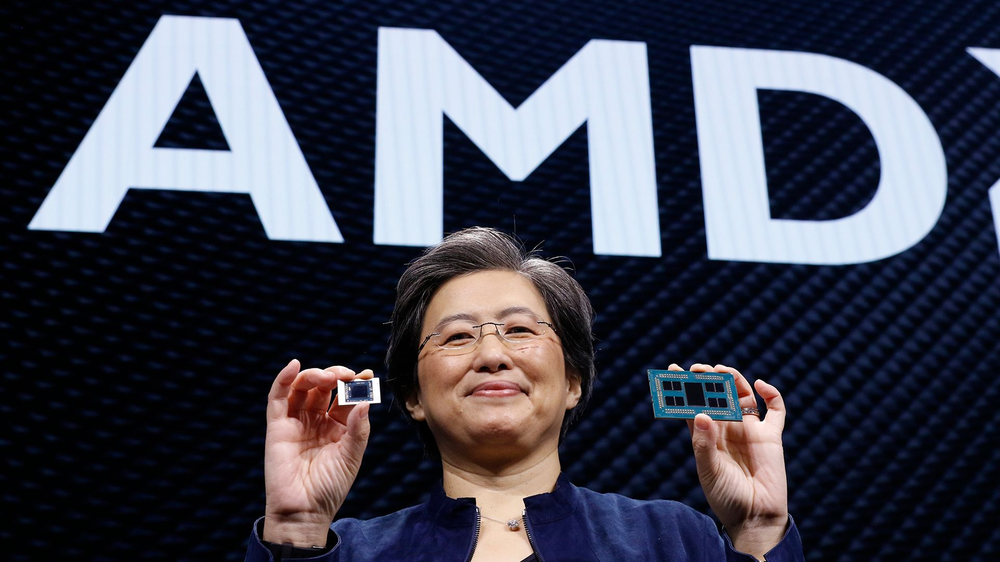
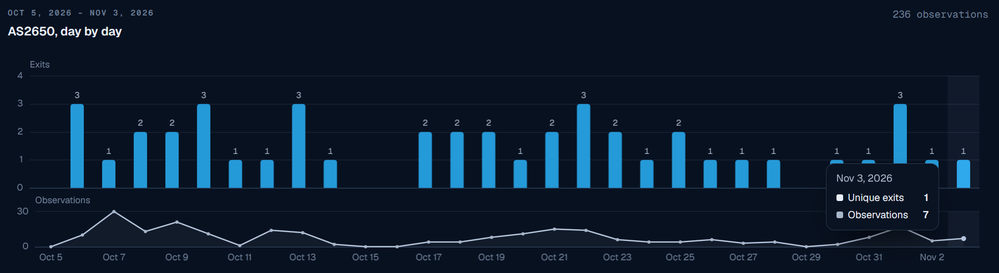

The front page, read closely and set in type — a briefing for Keegan
Compiled from news.ycombinator.comNovember 4, 2026Sources and threads cited below
Security · ★ 957PHP2Shell auditA 2024 PHP memory bug became exploitable after a two-week AI-assisted review; a patch preceded any known attack.
Privacy · ★ 574Gemini chat historyA personal-account user points to Google policy allowing training when Keep Activity is on, despite a paid subscription.
Hardware · ★ 560RTX Spark on LinuxThe laptop ran GPT-OSS-120B at 13.9 tokens a second on native Linux versus 65.4 on Windows.
Security · ★ 509Binance heistThe exchange describes a multi-stage campaign that began with recruitment pretext and reached wallet infrastructure.
The Front Page
Follow-Up
AI-assisted audit turns a PHP crash into a server takeover risk
A 2024 PHP memory bug became exploitable after a two-week AI-assisted review; a patch preceded any known attack.
Security★ 957 pts · 585 comments · ▲ +700 since the last edition
AI-assisted audit turns a PHP crash into a server takeover riskspectrum.ieee.org
WASHINGTON — An AI-assisted audit of PHP turned an out-of-memory bug reported in 2024 into an exploit path for arbitrary code execution on a host server. IEEE Spectrum reports that Calif found the path in two weeks during an OpenAI-sponsored audit; the PHP Foundation was notified and a patch was issued before any malicious use known to the researchers. The article identifies sites using PHP-backed systems including WordPress and Drupal as potentially exposed. [1]
The issue was initially treated as a crash, rather than a takeover risk. Columbia University computer scientist Suman Jana describes the exploit work as precise reasoning about which memory locations and bits to alter. In the HN discussion, one reader notes that AI-assisted discovery may force organizations to reassess security certifications and their underlying risk assumptions. [2]
Gemini personal subscribers question how saved chats are used for training
A personal-account user points to Google policy allowing training when Keep Activity is on, despite a paid subscription.
Privacy★ 574 pts · 148 comments
A personal Gemini subscriber says saved chats may be used to train Google models when Keep Activity is on, citing Google’s Gemini Apps help pages. The post says human reviewers may read a subset of chats, which Google says are disconnected from accounts before review; reviewed chats can be retained for up to three years. The claim is about personal accounts, not a blanket statement about every Gemini enterprise plan. [3]
The author says switching off Keep Activity or using temporary chats is the available alternative, but disabling history also changes how long sessions remain accessible. HN commenters questioned whether a paid plan should imply a different data-use policy; their expectations are not evidence of a different policy. [4]
Native Linux inference on RTX Spark laptop trails Windows by nearly fivefold
The laptop ran GPT-OSS-120B at 13.9 tokens a second on native Linux versus 65.4 on Windows.
Hardware★ 560 pts · 255 comments · ▲ +322 since the last edition
Native Linux inference on RTX Spark laptop trails Windows by nearly fivefoldwww.mindstudio.ai
On an MSI Prestige N16 Flip AI Plus with RTX Spark, MindStudio measured GPT-OSS-120B inference at 13.9 tokens per second under native Linux against 65.4 on Windows and 65.1 in WSL. The Linux desktop, CUDA acceleration, keyboard and display worked after setup, but plugged-in GPU clocks stayed near 780 MHz rather than roughly 2.2 GHz on Windows. [5]
The article attributes the gap to power-management logic in Nvidia Platform Controllers and Framework without a Linux counterpart; a Windows-adjusted GPU memory reservation was also needed so Linux could see more of the laptop’s 128GB. Several HN readers stressed that the affected RTX Spark laptop is not the DGX Spark desktop, which ships with Linux. [6]
Binance says a fake job interview led one of its engineers to run a malware-laced assignment on a work computer before the October 29 theft of $6.3 billion. The Register reports that the exchange describes a campaign involving a June Homebrew supply-chain attempt, a September recruiting approach, compromised internal AI tooling and later access to wallet-engineering machines. The FBI attributed the theft to the North Korean TraderTraitor operation linked to Lazarus Group. [7]
The malware replaced a development-tool component and communicated with an attacker-controlled server. Binance says the attackers used a wallet engineer’s container deployment token and another developer’s computer to launch the theft; the company says it has rebuilt affected systems and rotated credentials. One HN commenter reports receiving repeated approaches from fake companies during a job search, illustrating the social-engineering route without independently confirming this incident. [8]
AMD projects $17 billion in fourth-quarter revenue, above Intel guidance
The company reported $13.377 billion in third-quarter revenue, with data centers accounting for 64%.
Hardware★ 391 pts · 124 comments

AMD projects $17 billion in fourth-quarter revenue, above Intel guidancewww.tomshardware.com
AMD guided to approximately $17 billion in fourth-quarter revenue, a projection Tom’s Hardware says would exceed Intel’s forecast for the same period. That is a revenue comparison, not a completed quarter or a claim about unit shipments. AMD reported third-quarter revenue of $13.377 billion, up from $9.25 billion a year earlier, and net income of $2.43 billion. [9]
Data Center sales reached $8.55 billion, up 97% year over year and representing 64% of AMD revenue, according to the report. AMD credits Epyc processors and Instinct MI455X accelerators; the thread discussed how competition between the CPU vendors has changed since AMD’s pre-Zen years. [10]
Moonshot publishes weights for its 2.8-trillion-parameter Kimi K3.1 Pro
The model card lists 2.8 trillion total parameters, 104 billion active and a 1,048,576-token context.
AI★ 282 pts · 78 comments
Moonshot publishes weights for its 2.8-trillion-parameter Kimi K3.1 Prohuggingface.co
Moonshot AI has posted the weights and model card for Kimi K3.1 Pro, which it calls an open-weight, natively multimodal agentic model. The card lists a mixture-of-experts architecture with 2.8 trillion total parameters, 104 billion activated per token, 896 experts and 16 selected experts per token. Its context length is 1,048,576 tokens. [11]
The card describes MXFP4 weights and MXFP8 activations and reports 65.7 on Terminal-Bench 4.0 under its stated maximum-reasoning evaluation settings. HN readers noted that published weights do not make a model of this scale practical to run on an ordinary laptop; one commenter pointed to third-party inference hosts. [12]
GitHub resolves disruption to Git operations, pull requests and Issues
The November 4 incident affected Git Operations, API Requests, Issues, Pull Requests and Actions.
Tools★ 238 pts · 119 comments
GitHub marked its November 4 incident resolved at 11:50 UTC after degraded service across Git Operations, API Requests, Issues, Pull Requests and Actions. Its status updates first reported investigation at 09:49 UTC, said the API, git, Issues and Pull Requests degradation was mitigated by 11:30 UTC, and noted Actions mitigation at 11:43 UTC. [13]
The status page said a detailed root-cause analysis would follow, but had not supplied one in the fetched report. HN readers described intermittent clone and pull failures, consistent with GitHub’s account of elevated errors and delayed requests. [14]
Researchers report 236 residential-proxy exits on White House network
Layer3 Intel saw exits from six addresses across 26 of 30 days but cannot identify the devices.
Security★ 237 pts · 61 comments

Researchers report 236 residential-proxy exits on White House networklayer3intel.com
Layer3 Intel says its residential-proxy enumeration pipeline observed 236 exits through AS2650, registered to the Executive Office of the President, between October 5 and November 3. The exits came from six addresses on 26 of 30 days; the company says 28 proxy services could exit through the network. It also checked the addresses against public context pages from Spur and Synthient. [15]
The researchers say the timing could suggest a device running a proxy SDK, but their data identifies neither a device nor a person and does not establish a breach of internal systems. In the HN thread, a reader asked what a residential proxy is: it lets paying customers route traffic through another network so requests appear to originate there. [16]
San Francisco kept unauthorized bike-lane posts pending review in 2016
The article is from 2016, not a newly announced city policy.
Field★ 217 pts · 163 comments
San Francisco kept unauthorized bike-lane posts pending review in 201699percentinvisible.org
In a 2016 account, 99% Invisible described how San Francisco officials planned to replace unauthorized soft-hit bike-lane posts along John F. Kennedy Drive with official posts, leaving the temporary ones in place during review. The San Francisco Transformation Agency had installed them without approval after a series of street-safety actions; the source connected its activism to two cyclists killed in hit-and-run collisions that summer. [17]
The city said unauthorized objects normally must be removed because they violate code and could conflict with traffic. HN readers flagged the date in the title and pointed to other cities’ tactical-urbanism programs; this is an archived episode resurfacing on the front page, not a current 2026 installation. [18]
Essay argues verified AI research needs accountable human understanding
Jessica Hullman argues correct outputs alone do not settle who can defend a scientific claim.
Science★ 208 pts · 123 comments
Essay argues verified AI research needs accountable human understandingblog.cosmos-institute.org
Northwestern University professor Jessica Hullman argues that verification of an AI-generated proof or scientific result is not by itself sufficient to make it useful, accountable knowledge. In an October 30 essay for the Cosmos Institute, she asks who can explain a claim and respond when it fails or a trial has been gamed. [19]
The essay uses a hypothetical AI-discovered cancer treatment raised by Terry Tao and the problem of authors unable to defend papers they submit. HN commenters debated whether practical benefits can still be independent of human understanding, a distinction the essay asks readers not to collapse into output correctness alone. [20]
“It’s just that it’s a lot of very specific reasoning that is painful to do. And AI, I think, has done a very good job at that.”Suman Jana, Columbia University [1]
On This Page
Two security stories lead the debate: one on newly exploitable old code, another on the route through a fake interview into a cryptocurrency exchange. A 2016 bike-lane account is explicitly dated.
Box Score
Bars show points at the 22:01 UTC front-page snapshot; † marks the story with the most comments.
The day in one line
PHP2Shell’s exploit path, Gemini’s chat-history policy and laptop inference performance drew the three highest scores in this selection.
Front Page Ledger
Fresh stories
8
Follow-ups
2
Carried in digest
0
Total stories
10
Combined points
4,173
Combined comments
1,961
Corrections & Clarifications
RTX Spark: The slowdown is on an RTX Spark laptop under native Linux, not the Linux-shipping DGX Spark desktop; the article measures 13.9 versus 65.4 tokens per second on Windows, not a universal 35% rate.[5]
AMD versus Intel: “Outsell” here compares projected fourth-quarter revenue, not confirmed sales or CPU units. AMD’s $17 billion remains guidance.[9]
Residential proxies: 236 observed exits do not identify a compromised White House device or establish access to internal systems.[15]
Bike lanes: The account was published in 2016. It describes a planned official replacement during review, not a new 2026 decision.[17]
Publisher's Note
The PHP security audit leads this edition. It and the RTX Spark laptop story return as follow-ups after substantial score growth. Gemini chat-history controls, Binance’s account of a heist, and AMD’s revenue forecast anchor the fresh selection; the resurfaced bike-lane account dates to 2016. No article text was unavailable after a retry.
— The Herald
Sources
spectrum.ieee.org — AI-assisted audit turns a PHP crash into a server takeover risk.
Method: Front-page candidates were captured from HN Algolia at 22:01 UTC on November 4, 2026; the ten selected scores and comment counts are from that single candidate response. Article pages and HN discussions were fetched separately. Follow-up deltas compare with the most recent prior edition in the archive (257→957 and 238→560). The 2016 bike-lane page required a second article request.